अध्याय 2: भारतीय संविधान में अधिकार
अधिकार वे स्वतंत्रताएं, दावे और न्यायसंगत अवसर हैं जो किसी भी मनुष्य के जीवन, गरिमा और सर्वांगीण विकास के लिए अनिवार्य होते हैं।
- अधिकारों की परिभाषा: समाज द्वारा स्वीकृत और कानून द्वारा लागू किए गए दावे जो व्यक्ति के सर्वांगीण विकास (मानसिक, नैतिक व भौतिक) के लिए आवश्यक हैं।
- अधिकारों का घोषणापत्र (Bill of Rights): लोकतांत्रिक देशों में नागरिकों के अधिकारों को संविधान में एक सूची के रूप में दर्ज किया जाता है। यह सरकार को नागरिकों के अधिकारों के हनन से रोकता है।
- 1928 की नेहरू रिपोर्ट: भारतीय राष्ट्रीय आंदोलन के दौरान 1928 में मोतीलाल नेहरू समिति ने अधिकारों के घोषणापत्र की मांग की थी।
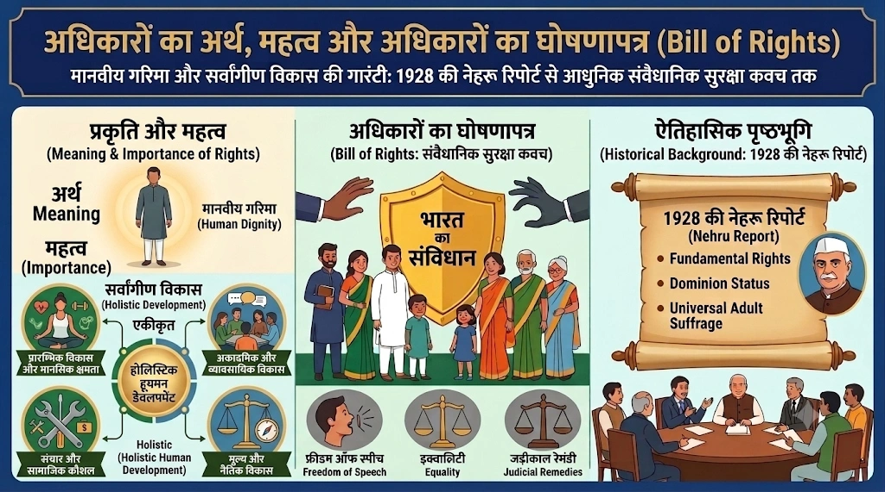
🎨 सचित्र शिक्षण कार्ड: अधिकारों का घोषणापत्र (Bill of Rights)
अधिकार मनुष्य के सर्वांगीण विकास के लिए अनिवार्य हैं। संविधान में शामिल 'अधिकारों का घोषणापत्र' नागरिकों की स्वतंत्रताओं को सुरक्षा कवच प्रदान करता है, जिसकी ऐतिहासिक नींव 1928 की नेहरू रिपोर्ट में रखी गई थी।
संविधान सभा ने स्वतंत्रता आंदोलन के मूल्यों को ध्यान में रखते हुए मौलिक अधिकारों को संविधान के भाग III में शामिल किया।
- सोमनाथ लाहिड़ी का विचार: संविधान सभा के कम्युनिस्ट सदस्य सोमनाथ लाहिड़ी ने तर्क दिया था कि अधिकारों को इस तरह नहीं लिखा जाना चाहिए कि एक हाथ से अधिकार दिए जाएं और दूसरे हाथ से वापस ले लिए जाएं।
- संविधान सभा का रुख: सभा ने माना कि व्यक्तिगत स्वतंत्रता और राज्य की सुरक्षा व सामाजिक व्यवस्था के बीच संतुलन बनाना अत्यंत आवश्यक है।
- संवैधानिक संरक्षण: मौलिक अधिकारों को साधारण कानूनी अधिकारों से अलग दर्जा दिया गया है और इन्हें संशोधित करने के लिए संविधान संशोधन की आवश्यकता होती है।
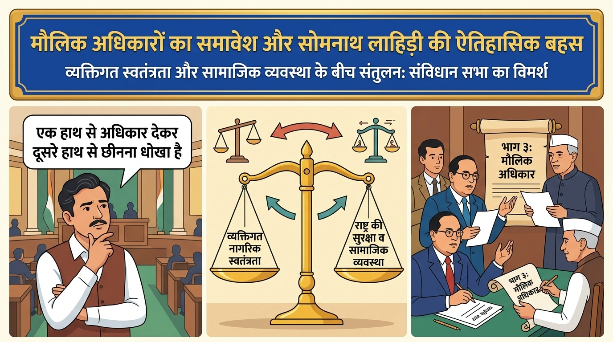
🎨 सचित्र शिक्षण कार्ड: अधिकारों का समावेश और सोमनाथ लाहिड़ी की बहस
संविधान सभा में सोमनाथ लाहिड़ी ने अधिकारों पर अत्यधिक प्रतिबंधों की तीखी आलोचना की थी। अंततः सभा ने व्यक्तिगत नागरिक स्वतंत्रता और राष्ट्र की सुरक्षा व सामाजिक व्यवस्था के बीच एक संतुलित व न्यायसंगत मार्ग चुना।
समानता का अधिकार लोकतंत्र की आधारशिला है, जो जाति, धर्म, लिंग या जन्मस्थान के आधार पर भेदभाव का अंत करता है।
- अनुच्छेद 14 (कानून के समक्ष समानता): कानून के समक्ष सभी नागरिक समान हैं और सभी को कानून का समान संरक्षण प्राप्त है।
- अनुच्छेद 15 (भेदभाव का निषेध): धर्म, मूलवंश, जाति, लिंग या जन्मस्थान के आधार पर सार्वजनिक स्थानों (दुकानों, होटलों, कुओं, तालाबों) के प्रयोग में कोई भेदभाव नहीं होगा।
- अनुच्छेद 16 (अवसर की समानता): सार्वजनिक रोजगार और नियुक्तियों में सभी नागरिकों को समान अवसर मिलेंगे (सकारात्मक कार्रवाई व आरक्षण इसके अपवाद नहीं, बल्कि वास्तविक समानता के साधन हैं)।
- अनुच्छेद 17 (अस्पृश्यता का अंत): छुआछूत का पूर्ण उन्मूलन और इसका आचरण एक दंडनीय अपराध है।
- अनुच्छेद 18 (उपादियों का अंत): सेना और शिक्षा संबंधी सम्मानों को छोड़कर अन्य सभी राजशाही उपाधियों का अंत।
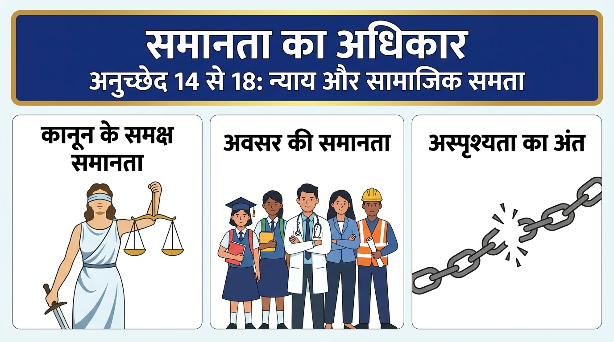
🎨 सचित्र शिक्षण कार्ड: समानता का अधिकार (अनुच्छेद 14 से 18)
संविधान का अनुच्छेद 14 से 18 कानून के समक्ष प्रत्येक नागरिक को पूर्ण समानता, भेदभाव का निषेध, लोक सेवाओं में अवसर की समता और अस्पृश्यता के समूल उन्मूलन की गारंटी देता है।
अनुच्छेद 19 भारतीय नागरिकों को 6 लोकतांत्रिक स्वतंत्रताओं का समूह प्रदान करता है:
- भाषण और अभिव्यक्ति की स्वतंत्रता: अपने विचारों को बोलने, लिखने, मीडिया और कला के माध्यम से व्यक्त करने का अधिकार।
- शांतिपूर्ण सम्मेलन की स्वतंत्रता: बिना हथियारों के शांतिपूर्वक एकत्र होने और सभा करने की आजादी।
- संघ या संगठन बनाने की स्वतंत्रता: समितियां, ट्रेड यूनियन या राजनीतिक दल बनाने का अधिकार।
- भारत में अबाध संचरण की स्वतंत्रता: देश के किसी भी क्षेत्र में बिना रोक-टोक घूमने का अधिकार।
- भारत में निवास की स्वतंत्रता: देश के किसी भी भाग में बसने या घर बनाने की आजादी।
- व्यापार व आजीविका की स्वतंत्रता: कोई भी वृत्ति, व्यापार, कारोबार या रोजगार चुनने का अधिकार।
- तर्कसंगत प्रतिबंध: ये स्वतंत्रताएं असीमित नहीं हैं; देश की संप्रभुता, सुरक्षा और लोक व्यवस्था के हित में राज्य इन पर उचित सीमाएं लगा सकता है।
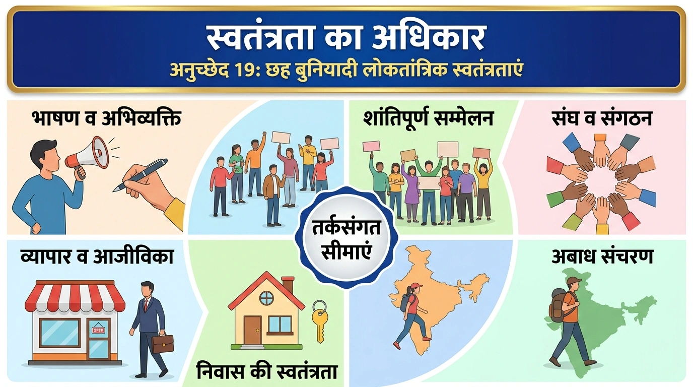
🎨 सचित्र शिक्षण कार्ड: स्वतंत्रता का अधिकार (अनुच्छेद 19)
अनुच्छेद 19 भारतीय नागरिकों को अभिव्यक्ति, सम्मेलन, संगठन, संचरण, निवास और आजीविका की छह अमूल्य लोकतांत्रिक स्वतंत्रताओं का सुरक्षा चक्र प्रदान करता है, जिन पर राष्ट्रहित में केवल तर्कसंगत सीमाएँ लगाई जा सकती हैं।
अनुच्छेद 21 प्रत्येक व्यक्ति को जीवन और व्यक्तिगत स्वतंत्रता की गारंटी देता है।
- प्राण और दैहिक स्वतंत्रता: किसी भी व्यक्ति को उसके प्राण या दैहिक स्वतंत्रता से विधि द्वारा स्थापित प्रक्रिया के अतिरिक्त वंचित नहीं किया जाएगा।
- न्यायिक विस्तार: सर्वोच्च न्यायालय ने जीवन के अधिकार का व्यापक अर्थ निकाला है—इसमें केवल जीवित रहना शामिल नहीं है, बल्कि सम्मानपूर्वक जीवन जीना शामिल है।
- शामिल अधिकार: स्वच्छ पर्यावरण का अधिकार, निजता का अधिकार (Right to Privacy - Puttaswamy Case 2017), आजीविका का अधिकार, और निःशुल्क कानूनी सहायता का अधिकार।
- अनुच्छेद 21A (शिक्षा का अधिकार): 86वें संविधान संशोधन 2002 द्वारा 6 से 14 वर्ष के बच्चों के लिए प्राथमिक शिक्षा को मौलिक अधिकार बनाया गया।
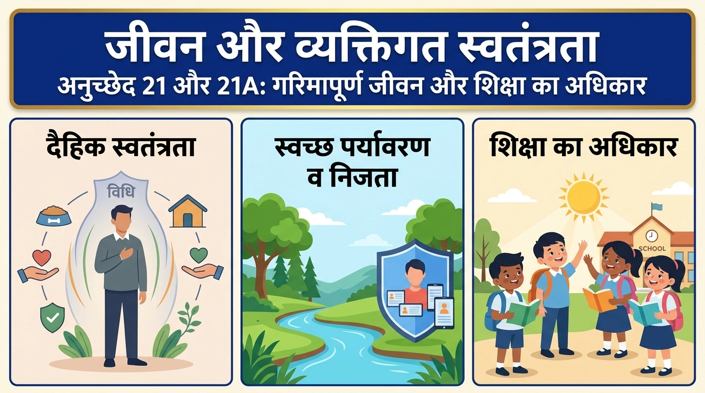
🎨 सचित्र शिक्षण कार्ड: जीवन और व्यक्तिगत स्वतंत्रता (अनुच्छेद 21 व 21A)
अनुच्छेद 21 केवल जैविक जीवन नहीं, बल्कि मानवीय गरिमा से युक्त जीवन की गारंटी देता है। न्यायपालिका ने इसका विस्तार कर स्वच्छ पर्यावरण, निजता और 6 से 14 वर्ष के बच्चों के लिए निःशुल्क व अनिवार्य शिक्षा को इसमें समाहित किया है।
संविधान अपराध के आरोपी व्यक्तियों को भी कुछ मौलिक सुरक्षा प्रदान करता है ताकि निर्दोषों को सजा न मिले।
- अभियुक्तों के अधिकार (अनुच्छेद 20 व 22): किसी व्यक्ति को एक ही अपराध के लिए एक से अधिक बार सजा नहीं दी जा सकती; अपने खिलाफ गवाही के लिए बाध्य नहीं किया जा सकता; 24 घंटे में मजिस्ट्रेट के समक्ष पेशी का अधिकार।
- निवारक नजरबंदी (Preventive Detention): यदि सरकार को अंदेशा हो कि कोई व्यक्ति कानून-व्यवस्था या देश की सुरक्षा के लिए खतरा पैदा कर सकता है, तो उसे अपराध करने से पहले ही गिरफ्तार किया जा सकता है।
- आलोचना और विवाद: निवारक नजरबंदी की अधिकतम अवधि 3 महीने होती है (सलाहकार बोर्ड की मंजूरी आवश्यक)। आलोचकों का मानना है कि इस प्रावधान का दुरुपयोग राजनीतिक विरोधियों और नागरिक अधिकारों को दबाने के लिए किया जाता रहा है।
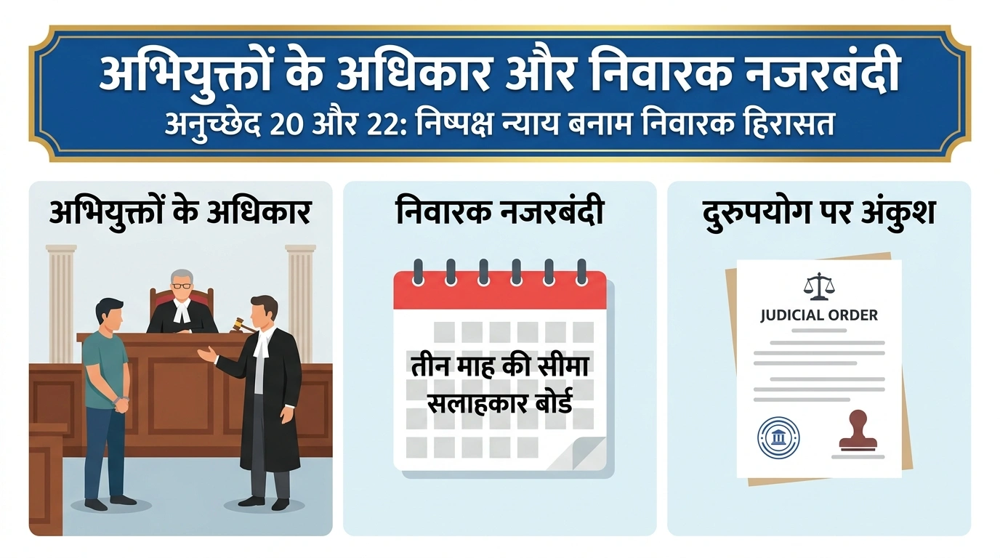
🎨 सचित्र शिक्षण कार्ड: अभियुक्तों के अधिकार व निवारक नजरबंदी
संविधान अभियुक्तों को निष्पक्ष सुनवाई और न्यायिक संरक्षण देता है। वहीं असाधारण स्थितियों में राष्ट्र सुरक्षा हेतु लागू 'निवारक नजरबंदी' पर अधिकतम 3 माह की सीमा और सलाहकार बोर्ड की समीक्षा द्वारा अंकुश लगाया गया है।
यह अधिकार मानव गरिमा की रक्षा करता है और किसी भी प्रकार के शारीरिक व आर्थिक शोषण को रोकता है।
- अनुच्छेद 23 (मानव दुर्व्यापार व बेगार का निषेध): मनुष्यों की खरीद-बिक्री (Human Trafficking), बेगार (बिना मजदूरी के काम करवाना) और बंधुआ मजदूरी को कानूनी रूप से प्रतिबंधित करता है।
- अनुच्छेद 24 (बाल श्रम का निषेध): 14 वर्ष से कम आयु के बच्चों को कारखानों, खानों या अन्य जोखिम भरे कामों में नियोजन पर पूर्ण रोक लगाता है।
- कानूनी सुधार: बाल श्रम (निषेध और विनियमन) संशोधन अधिनियम 2016 द्वारा सभी प्रकार के बाल श्रम को संज्ञेय अपराध बनाया गया है।
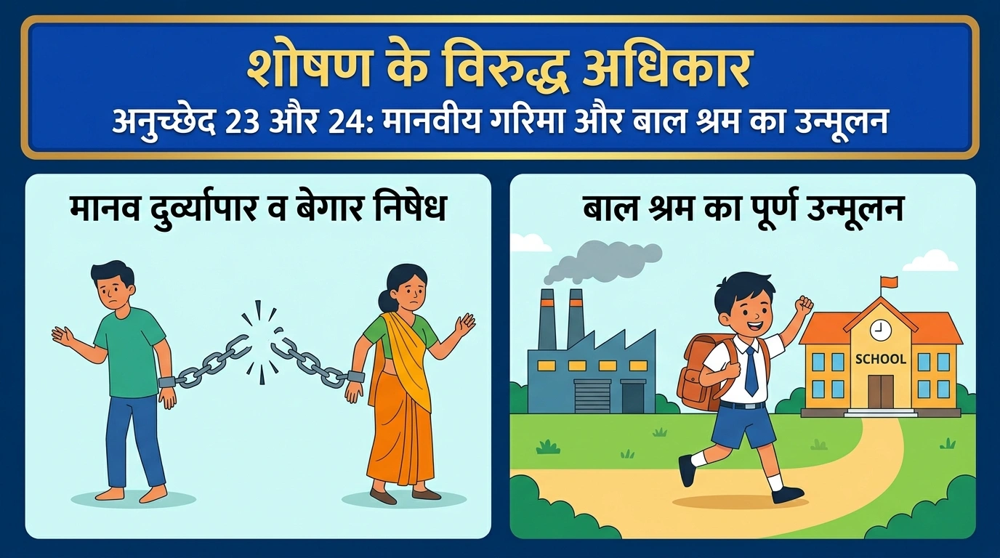
🎨 सचित्र शिक्षण कार्ड: शोषण के विरुद्ध अधिकार (अनुच्छेद 23 व 24)
संविधान मानव तस्करी, बंधुआ मजदूरी और बेगार का पूर्ण निषेध करता है। साथ ही 14 वर्ष से कम आयु के बच्चों को जोखिम भरे कारखानों व खानों से मुक्त कर शिक्षा और गरिमा का जीवन सुनिश्चित करता है।
भारत एक धर्मनिरपेक्ष देश है जहां प्रत्येक नागरिक को अपनी आस्था के अनुसार धर्म मानने का अधिकार है।
- अनुच्छेद 25 (अंतःकरण की स्वतंत्रता): किसी भी व्यक्ति को अपने धर्म को मानने, आचरण करने और प्रचार करने की पूर्ण आजादी है।
- अनुच्छेद 26 (धार्मिक मामलों का प्रबंधन): धार्मिक संप्रदायों को अपने धार्मिक व चैरिटी संस्थानों की स्थापना और प्रबंधन का अधिकार।
- अनुच्छेद 27 (धार्मिक करों से मुक्ति): राज्य किसी भी नागरिक को ऐसा कर (Tax) देने के लिए बाध्य नहीं कर सकता जिसका उपयोग किसी विशेष धर्म के प्रचार में होना हो।
- अनुच्छेद 28 (सरकारी शिक्षण संस्थानों में धार्मिक शिक्षा पर रोक): पूर्णतः सरकारी धन से चलने वाले शिक्षण संस्थानों में कोई धार्मिक शिक्षा नहीं दी जाएगी।
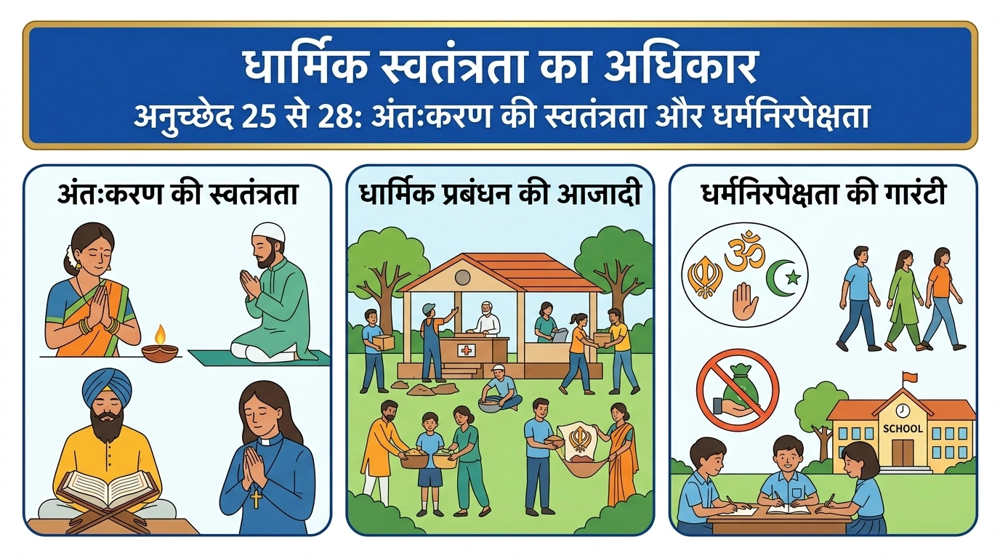
🎨 सचित्र शिक्षण कार्ड: धार्मिक स्वतंत्रता का अधिकार (अनुच्छेद 25 से 28)
भारत का संविधान अंतःकरण की पूर्ण स्वतंत्रता प्रदान करता है। राज्य किसी धर्म विशेष पर कर नहीं लगाता और सभी धर्मों के प्रति निष्पक्ष रहकर धर्मनिरपेक्षता के सिद्धांत का पालन करता है।
यह प्रावधान भारत की सांस्कृतिक विविधता की रक्षा करता है और धार्मिक व भाषाई अल्पसंख्यकों को सुरक्षा प्रदान करता है।
- अनुच्छेद 29 (संस्कृति व भाषा का संरक्षण): भारत के किसी भी भाग में रहने वाले नागरिकों के समूह को अपनी विशिष्ट भाषा, लिपि या संस्कृति को बनाए रखने का अधिकार है।
- अनुच्छेद 30 (शिक्षण संस्थाओं की स्थापना): सभी धार्मिक और भाषाई अल्पसंख्यकों को अपनी रुचि की शिक्षण संस्थाएं स्थापित करने और उनका प्रशासन चलाने का अधिकार है।
- राज्य द्वारा सहायता: शिक्षण संस्थाओं को अनुदान देते समय राज्य अल्पसंख्यकों द्वारा संचालित होने के आधार पर कोई भेदभाव नहीं करेगा।
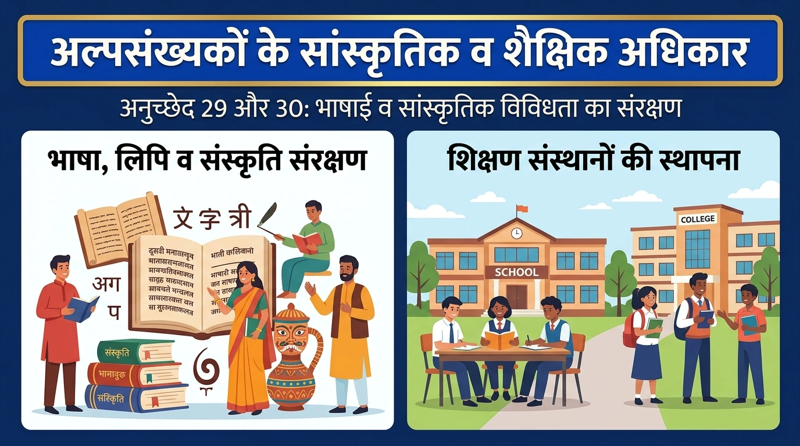
🎨 सचित्र शिक्षण कार्ड: अल्पसंख्यकों के सांस्कृतिक व शैक्षिक अधिकार (अनुच्छेद 29 व 30)
संविधान धार्मिक और भाषाई अल्पसंख्यकों को अपनी विशिष्ट भाषा, लिपि और संस्कृति को सुरक्षित रखने तथा अपनी पसंद की शिक्षण संस्थाएं स्थापित व संचालित करने का पूर्ण अधिकार देता है।
अनुच्छेद 32 नागरिकों को अपने मौलिक अधिकारों के हनन पर सीधे सर्वोच्च न्यायालय जाने का अधिकार देता है।
- डॉ. बी.आर. अंबेडकर का कथन: डॉ. अंबेडकर ने अनुच्छेद 32 को "संविधान का हृदय और आत्मा" (Heart and Soul of the Constitution) कहा था, क्योंकि इसके बिना अन्य सभी मौलिक अधिकार अर्थहीन हो जाते हैं।
- न्यायालय की शक्ति: सर्वोच्च न्यायालय (अनुच्छेद 32) और उच्च न्यायालय (अनुच्छेद 226) मौलिक अधिकारों की रक्षा के लिए विशेष आदेश या रिट (Writs) जारी कर सकते हैं।
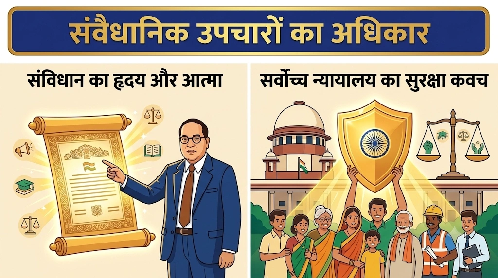
🎨 सचित्र शिक्षण कार्ड: संवैधानिक उपचारों का अधिकार (अनुच्छेद 32)
डॉ. बी.आर. आंबेडकर ने अनुच्छेद 32 को 'संविधान का हृदय और आत्मा' कहा था। यह नागरिकों को अपने अधिकारों के संरक्षण के लिए सीधे सर्वोच्च न्यायालय जाने और रिट जारी कराने का अभेद्य सुरक्षा कवच प्रदान करता है।
न्यायालय द्वारा जारी की जाने वाली 5 प्रमुख रिट निम्नलिखित हैं:
- बंदी प्रत्यक्षीकरण (Habeas Corpus): "शरीर को प्रस्तुत किया जाए।" अवैध रूप से हिरासत में लिए गए व्यक्ति को न्यायालय के सामने पेश करने का आदेश।
- परमादेश (Mandamus): "हम आदेश देते हैं।" जब कोई सार्वजनिक पदाधिकारी अपने कानूनी कर्तव्यों का पालन नहीं करता, तो न्यायालय उसे कार्य करने का आदेश देता है।
- प्रतिषेध (Prohibition): "रोकना।" निचली अदालत को अपने अधिकार क्षेत्र से बाहर जाकर काम करने से रोकने के लिए ऊपरी अदालत द्वारा जारी।
- अधिकार-पृच्छा (Quo-Warranto): "किस अधिकार से?" जब कोई व्यक्ति ऐसे पद पर दावा करता है जिसके वह योग्य नहीं है, तो न्यायालय उसकी वैधता की जांच करता है।
- उत्प्रेषण (Certiorari): "प्रमाणित होना या सूचना देना।" निचली अदालत में लंबित मुकदमे को ऊपरी अदालत में भेजने या निचली अदालत के फैसले को रद्द करने हेतु।
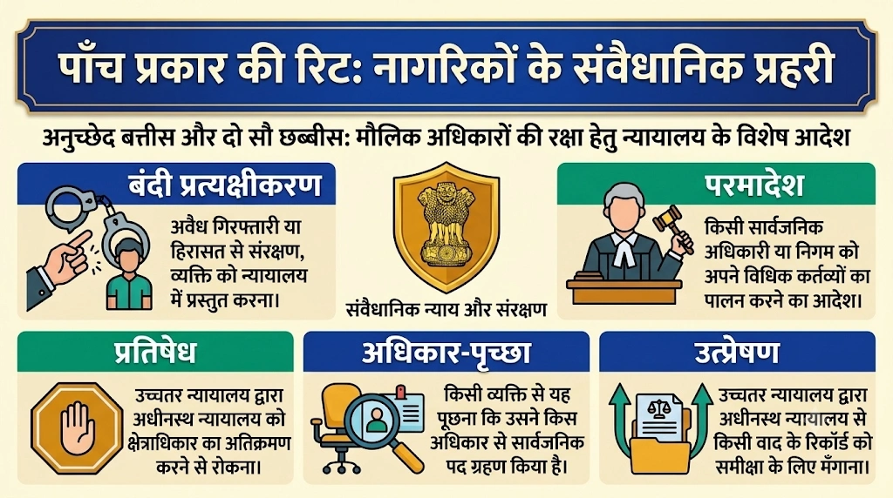
🎨 सचित्र शिक्षण कार्ड: पाँच प्रकार की रिट (Writs: नागरिकों के प्रहरी)
सर्वोच्च न्यायालय (अनुच्छेद 32) और उच्च न्यायालय (अनुच्छेद 226) नागरिकों के मौलिक अधिकारों की रक्षा हेतु पाँच असाधारण रिट जारी करते हैं—बंदी प्रत्यक्षीकरण, परमादेश, प्रतिषेध, अधिकार-पृच्छा और उत्प्रेषण।
राष्ट्रीय मानवाधिकार आयोग (National Human Rights Commission - NHRC): 1993 में गठित एक स्वतंत्र स्वायत्त संस्था है जो देश में मानवाधिकारों की रक्षक के रूप में कार्य करती है। इसमें सर्वोच्च न्यायालय के पूर्व मुख्य न्यायाधीश या न्यायाधीश अध्यक्ष होते हैं।
आयोग के कार्य:
- जांच की शक्ति: मानवाधिकारों के उल्लंघन के मामलों की स्वयं (Suo Moto) या पीड़ित की शिकायत मिलने पर जांच करना।
- जेलों का निरीक्षण: जेलों, बंदी गृहों व सुधार गृहों का दौरा कर बंदियों की स्थिति का अध्ययन करना और सुधार हेतु सिफारिशें देना।
- मानवाधिकार शिक्षा: मानवाधिकारों के क्षेत्र में शोध, जन-जागरूकता और शिक्षा का व्यापक प्रसार करना।
- संवैधानिक समीक्षा: मानवाधिकारों के संरक्षण हेतु लागू संवैधानिक व कानूनी प्रावधानों की समीक्षा करना और प्रभावी क्रियान्वयन के उपाय सुझाना।
सीमाएं:
- केवल सलाहकारी प्रकृति: आयोग की सिफारिशें सरकार पर बाध्यकारी नहीं होतीं; यह केवल सरकार को सुझाव दे सकता है।
- जांच व अभियोजन शक्ति का अभाव: आयोग स्वयं किसी दोषी को सजा नहीं दे सकता और न ही पीड़ित को सीधे वित्तीय मुआवजा देने का आदेश जारी कर सकता है।
- सशस्त्र बलों पर सीमित अधिकार: सेना और केंद्रीय सशस्त्र पुलिस बलों द्वारा मानवाधिकार उल्लंघन के मामलों में आयोग की शक्तियां बहुत सीमित हैं।
- समय सीमा की बाध्यता: घटना घटने के 1 वर्ष के बाद मानवाधिकार उल्लंघन से जुड़ी शिकायतों की जांच करने का अधिकार आयोग के पास नहीं है।
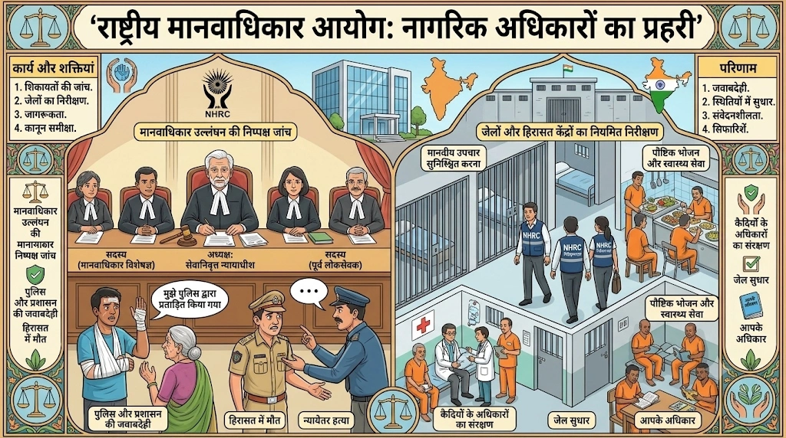
🎨 सचित्र शिक्षण कार्ड: राष्ट्रीय मानवाधिकार आयोग (नागरिक अधिकारों का प्रहरी)
1993 में गठित राष्ट्रीय मानवाधिकार आयोग (NHRC) नागरिकों के अधिकारों के उल्लंघन, हिरासत में प्रताड़ना और पुलिसिया ज्यादतियों की निष्पक्ष जांच करता है तथा जेलों की मानवीय स्थितियों की सतत निगरानी करता है।
राज्य के नीति निर्देशक तत्व (Directive Principles of State Policy - DPSP): संविधान के भाग IV में अनुच्छेद 36 से 51 तक वर्णित हैं, जो आयरलैंड के संविधान से प्रेरित हैं। इनका मुख्य उद्देश्य भारत में एक कल्याणकारी राज्य (Welfare State) की स्थापना करना तथा सामाजिक और आर्थिक लोकतंत्र की सुदृढ़ नींव रखना है।
- कल्याणकारी राज्य का लक्ष्य: नागरिकों की बुनियादी आवश्यकताओं की पूर्ति, सामाजिक न्याय, स्वास्थ्य सुविधाएं तथा कमजोर वर्गों का सशक्तिकरण सुनिश्चित करना।
- सकारात्मक निर्देश: जहाँ मौलिक अधिकार राज्य की सत्ता पर नकारात्मक अंकुश लगाते हैं, वहीं नीति निर्देशक तत्व राज्य को लोकहित में सक्रिय कदम उठाने के सकारात्मक निर्देश देते हैं।
- गैर-न्यायोचित प्रकृति: इन्हें अदालतों द्वारा जबरन लागू नहीं कराया जा सकता, परंतु देश के शासन में ये मूलभूत (Fundamental in governance) हैं।
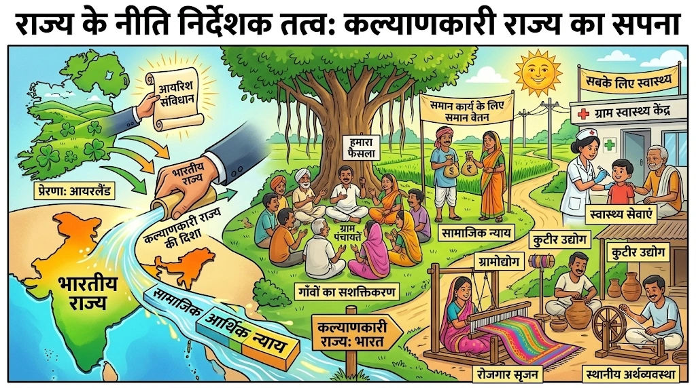
🎨 सचित्र शिक्षण कार्ड: राज्य के नीति निर्देशक तत्व (कल्याणकारी राज्य का सपना)
आयरलैंड के संविधान से प्रेरित नीति निर्देशक तत्व (DPSP) भारत को एक लोक कल्याणकारी राज्य बनाते हैं—जहाँ सामाजिक न्याय, ग्राम पंचायतें, कुटीर उद्योग, शिक्षा व स्वास्थ्य सेवाएं सभी नागरिकों तक पहुंचाई जाती हैं।
संविधान निर्माताओं ने निर्देशक तत्वों को तीन प्रमुख वैचारिक श्रेणियों में विभाजित किया है:
1. समाजवादी सिद्धांत (Socialistic Principles):
- असमानता में कमी: समाज में आय, संपत्ति और अवसरों की असमानता को समाप्त करना।
- पर्याप्त आजीविका: सभी नागरिकों (पुरुष व स्त्री) के लिए आजीविका के पर्याप्त साधन उपलब्ध कराना (अनुच्छेद 39)।
- समान काम समान वेतन: समान कार्य के लिए समान वेतन की व्यवस्था करना और धन के संकेंद्रण को रोकना।
2. गांधीवादी सिद्धांत (Gandhian Principles):
- ग्राम पंचायतें: ग्राम पंचायतों का गठन कर उन्हें स्वायत्त शासन की इकाइयां बनाना (अनुच्छेद 40)।
- कुटीर उद्योग: ग्रामीण क्षेत्रों में व्यक्तिगत व सहकारी कुटीर उद्योगों को बढ़ावा देना (अनुच्छेद 43)।
- मद्यनिषेध: नशीले पदार्थों व शराब की बिक्री पर प्रतिबंध लगाना (अनुच्छेद 47)।
- पशुधन संरक्षण: गोवध पर रोक और दुधारू पशुओं की नस्ल सुधारना (अनुच्छेद 48)।
3. उदारवादी-बौद्धिक सिद्धांत (Liberal-Intellectual Principles):
- समान नागरिक संहिता: देश के सभी नागरिकों के लिए समान नागरिक संहिता (Uniform Civil Code - UCC, अनुच्छेद 44) लागू करने का प्रयास।
- बाल्यावस्था देखभाल व शिक्षा: 6 वर्ष से कम आयु के बच्चों के लिए प्रारंभिक बाल्यावस्था देखभाल व शिक्षा (अनुच्छेद 45)।
- न्यायपालिका का पृथक्करण: राज्य की लोक सेवाओं में कार्यपालिका से न्यायपालिका को पृथक करना (अनुच्छेद 50)।
- अंतरराष्ट्रीय शांति: अंतरराष्ट्रीय शांति, सुरक्षा और राष्ट्रों के मध्य न्यायपूर्ण संबंधों को बढ़ावा देना (अनुच्छेद 51)।
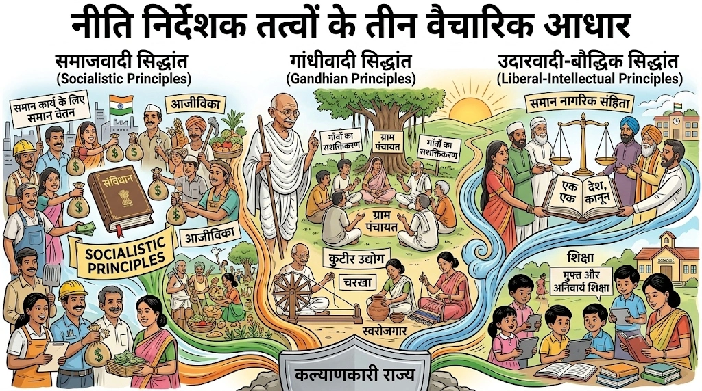
🎨 सचित्र शिक्षण कार्ड: नीति निर्देशक तत्वों के तीन वैचारिक आधार
नीति निर्देशक तत्व तीन वैचारिक धाराओं का संगम हैं—समाजवादी सिद्धांत (समान वेतन व आजीविका), गांधीवादी सिद्धांत (ग्राम पंचायतें व कुटीर उद्योग), तथा उदारवादी-बौद्धिक सिद्धांत (समान नागरिक संहिता व अंतरराष्ट्रीय शांति)।
मौलिक अधिकार और नीति निर्देशक तत्व दोनों एक-दूसरे के पूरक हैं, परंतु व्यावहारिक रूप से इनके बीच कई बार टकराव हुआ है।
- मूल अंतर: मौलिक अधिकार व्यक्तिगत स्वतंत्रता पर बल देते हैं और न्यायोचित (Justiciable) हैं, जबकि DPSP समाज कल्याण पर बल देते हैं और गैर-न्यायोचित (Non-Justiciable) हैं।
- ऐतिहासिक विवाद: 1950-1970 के दशक में संपत्ति के अधिकार और भूमि सुधार कानूनों को लेकर संसद और न्यायपालिका में संघर्ष हुआ।
- 42वाँ संशोधन (1976): संसद ने DPSP को मौलिक अधिकारों पर प्राथमिकता देने का प्रयास किया।
- मिनर्वा मिल्स मामला (1980): सर्वोच्च न्यायालय ने फैसला दिया कि संविधान मौलिक अधिकारों और नीति निर्देशक तत्वों के बीच सुलभ संतुलन (Harmonious Balance) की नींव पर टिका है। दोनों में से किसी एक को दूसरे से श्रेष्ठ नहीं माना जा सकता।
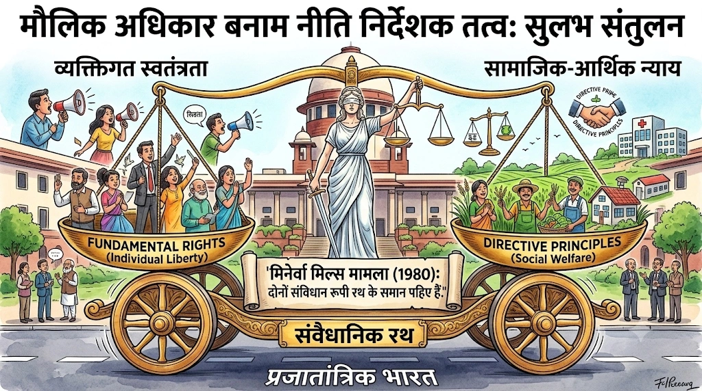
🎨 सचित्र शिक्षण कार्ड: मौलिक अधिकार बनाम नीति निर्देशक तत्व (सुलभ संतुलन)
मिनर्वा मिल्स मामले (1980) में सर्वोच्च न्यायालय ने ऐतिहासिक निर्णय दिया कि मौलिक अधिकार (व्यक्तिगत स्वतंत्रता) और नीति निर्देशक तत्व (सामाजिक-आर्थिक न्याय) भारतीय संविधान रूपी रथ के दो समान पहिए हैं, जिनका सुलभ संतुलन ही लोकतंत्र की मूल आत्मा है।
मौलिक कर्तव्यों की ऐतिहासिक पृष्ठभूमि: मूल संविधान में केवल नागरिकों के अधिकारों का उल्लेख था, कर्तव्यों का नहीं। अधिकारों के साथ-साथ नागरिकों के अपने देश और समाज के प्रति कुछ कर्तव्य भी होते हैं।
- सोवियत संघ (USSR) से प्रेरणा: भारत ने मौलिक कर्तव्यों का विचार पूर्व सोवियत संघ के संविधान से ग्रहण किया।
- स्वर्ण सिंह समिति (1976): 1976 में सरकार द्वारा गठित सरदार स्वर्ण सिंह समिति ने संविधान में कर्तव्यों को शामिल करने की सशक्त सिफारिश की।
- 42वां संविधान संशोधन (1976): संविधान में एक नया भाग IV-A और नया अनुच्छेद 51A जोड़कर 10 मौलिक कर्तव्य शामिल किए गए। बाद में 86वें संशोधन (2002) द्वारा 11वां कर्तव्य जोड़ा गया।
- प्रकृति: ये कर्तव्य गैर-न्यायोचित (Non-Justiciable) हैं, परंतु नागरिकों में राष्ट्रभक्ति और नैतिक अनुशासन का भाव जगाते हैं।
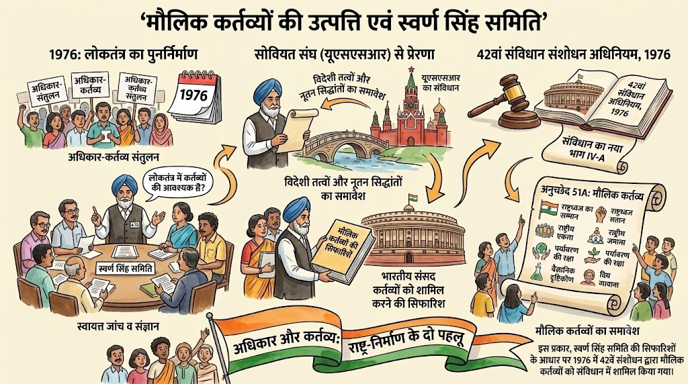
🎨 सचित्र शिक्षण कार्ड: मौलिक कर्तव्यों की उत्पत्ति एवं स्वर्ण सिंह समिति
1976 में सरदार स्वर्ण सिंह समिति की सिफारिशों पर सोवियत संघ के संविधान से प्रेरित होकर 42वें संशोधन द्वारा संविधान के भाग IV-A (अनुच्छेद 51A) में मौलिक कर्तव्य शामिल किए गए, जो अधिकार और कर्तव्य के संतुलन को राष्ट्र-निर्माण का आधार बनाते हैं।
अनुच्छेद 51A के अंतर्गत प्रत्येक भारतीय नागरिक के 11 प्रमुख मौलिक कर्तव्य निम्नलिखित हैं:
- संवैधानिक आदर्शों का आदर: संविधान का पालन करना तथा उसके आदर्शों, संस्थाओं, राष्ट्रध्वज और राष्ट्रगान का आदर करना।
- राष्ट्रीय आंदोलन के आदर्श: स्वतंत्रता के लिए हमारे राष्ट्रीय आंदोलन को प्रेरित करने वाले उच्च आदर्शों को हृदय में संजोए रखना और उनका पालन करना।
- संप्रभुता व अखंडता: भारत की संप्रभुता, एकता और अखंडता की रक्षा करना और उसे अक्षुण्ण रखना।
- देश की रक्षा: देश की रक्षा करना और आह्वान किए जाने पर राष्ट्र की सेवा करना।
- भ्रातृत्व की भावना: भारत के सभी लोगों में समरसता और समान भ्रातृत्व की भावना का निर्माण करना; तथा स्त्रियों के सम्मान के विरुद्ध प्रथाओं का त्याग करना।
- सामासिक संस्कृति: हमारी सामासिक संस्कृति (Composite Culture) की समृद्ध विरासत का महत्व समझना और उसका परिरक्षण करना।
- पर्यावरण संरक्षण: प्राकृतिक पर्यावरण की (जिसके अंतर्गत वन, झील, नदी और वन्य जीव हैं) रक्षा करना और संवर्धन करना तथा प्राणिमात्र के प्रति दयाभाव रखना।
- वैज्ञानिक दृष्टिकोण: वैज्ञानिक दृष्टिकोण, मानववाद और ज्ञानार्जन तथा सुधार की भावना का विकास करना।
- सार्वजनिक संपत्ति: सार्वजनिक संपत्ति को सुरक्षित रखना और हिंसा से दूर रहना।
- सतत उत्कर्ष: व्यक्तिगत और सामूहिक गतिविधियों के सभी क्षेत्रों में उत्कर्ष की ओर बढ़ने का सतत प्रयास करना।
- शिक्षा का अवसर: 6 से 14 वर्ष तक की आयु के बच्चों के माता-पिता या संरक्षक द्वारा उन्हें प्राथमिक शिक्षा के अवसर प्रदान कराना (86वां संशोधन 2002)।
प्रकृति एवं महत्व: मौलिक कर्तव्य गैर-न्यायोचित (Non-Justiciable) हैं, परंतु ये नागरिकों को देश के प्रति उनके उत्तरदायित्वों का अहसास कराते हैं और राष्ट्र की एकता सुदृढ़ करते हैं।
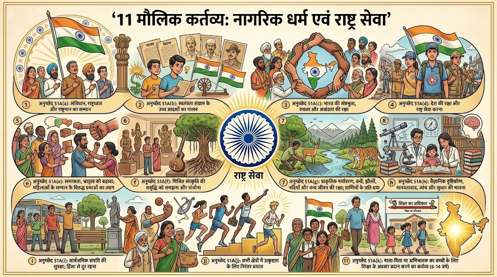
🎨 सचित्र शिक्षण कार्ड: 11 मौलिक कर्तव्य (नागरिक धर्म एवं राष्ट्र सेवा)
अनुच्छेद 51A के तहत 11 मौलिक कर्तव्य नागरिकों को राष्ट्रध्वज व राष्ट्रगान का आदर, पर्यावरण संरक्षण, वैज्ञानिक दृष्टिकोण, महिलाओं का सम्मान और बच्चों की प्राथमिक शिक्षा सुनिश्चित करने का नैतिक आह्वान करते हैं।
तुलनात्मक अध्ययन (NCERT संदर्भ): दक्षिण अफ्रीका का संविधान दिसंबर 1996 में लागू हुआ, जिसे रंगभेद (Apartheid) शासन के अंत के बाद तैयार किया गया था। इसे दुनिया के सबसे प्रगतिशील व विस्तृत अधिकारों के घोषणापत्रों में गिना जाता है।
- गरिमा व निजता का अधिकार: प्रत्येक व्यक्ति को अंतर्निहित मानवीय गरिमा और निजता (Privacy) का पूर्ण अधिकार।
- पर्यावरण व स्वास्थ्य अधिकार: स्वच्छ और सुरक्षित पर्यावरण का अधिकार, तथा स्वास्थ्य सेवाएं, पर्याप्त भोजन व जल पाने का अधिकार।
- उचित आवास व श्रम व्यवहार: किसी को भी उसके घर से मनमाने ढंग से बेदखल न किए जाने का अधिकार और निष्पक्ष श्रम व्यवहार की गारंटी।
- संवैधानिक न्यायालय: अधिकारों के संरक्षण और प्रभावी क्रियान्वयन की सतत निगरानी हेतु विशेष संवैधानिक न्यायालय का गठन।
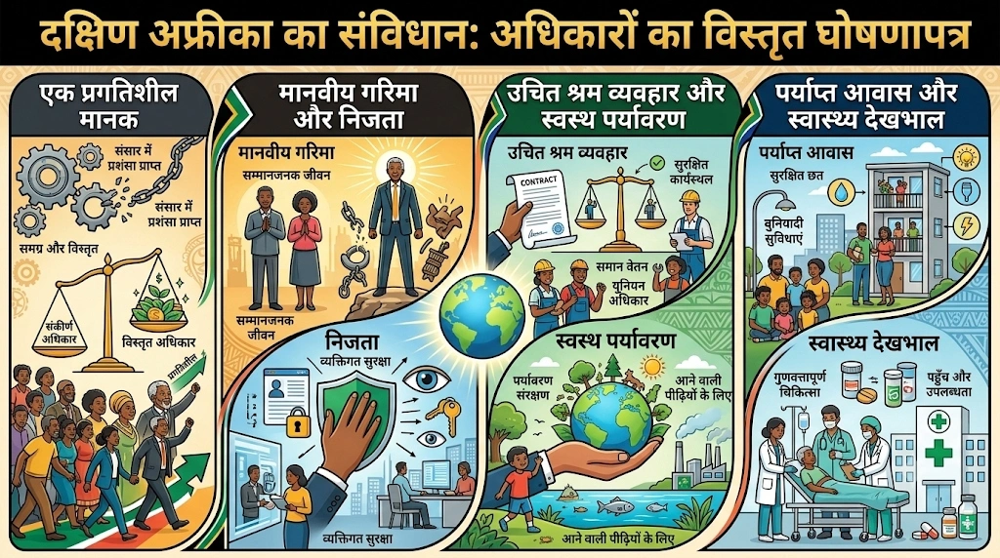
🎨 सचित्र शिक्षण कार्ड: दक्षिण अफ्रीका का संविधान (विस्तृत घोषणापत्र)
रंगभेद के अंत के बाद 1996 में लागू दक्षिण अफ्रीकी संविधान मानवीय गरिमा, निजता, उचित श्रम व्यवहार, स्वच्छ पर्यावरण, स्वास्थ्य और पर्याप्त आवास जैसे अति-प्रगतिशील अधिकारों की संवैधानिक गारंटी देता है।
अधिकारों का निरंतर विकास: समाज के विकास और न्यायिक व्याख्याओं के साथ-साथ संविधान में नए अधिकारों की पहचान हुई है। भारतीय न्यायपालिका ने अनुच्छेद 21 (जीवन का अधिकार) का विस्तार कर कई नए अधिकारों को मौलिक अधिकारों की श्रेणी में शामिल किया है।
- शिक्षा का अधिकार (RTE - 2002/2009): 86वें संविधान संशोधन द्वारा अनुच्छेद 21A जोड़कर 6 से 14 वर्ष के बच्चों के लिए मुफ्त व अनिवार्य प्राथमिक शिक्षा को मौलिक अधिकार बनाया गया।
- सूचना का अधिकार (RTI - 2005): नागरिकों को सरकारी कार्यों और निर्णयों की जानकारी प्राप्त करने का विधिक अधिकार, जिससे पारदर्शिता व जवाबदेही स्थापित हुई।
- स्वच्छ पर्यावरण व प्रदूषण मुक्त जल: सुप्रीम कोर्ट ने माना कि गरिमापूर्ण जीवन जीने के अधिकार में प्रदूषण मुक्त वायु, शुद्ध पेयजल और स्वस्थ पर्यावरण का अधिकार अंतर्निहित है।
- निजता का अधिकार (Right to Privacy - 2017): के.एस. पुट्टस्वामी मामले (2017) में सर्वोच्च न्यायालय ने निजता को अनुच्छेद 21 के तहत एक मौलिक अधिकार घोषित किया।
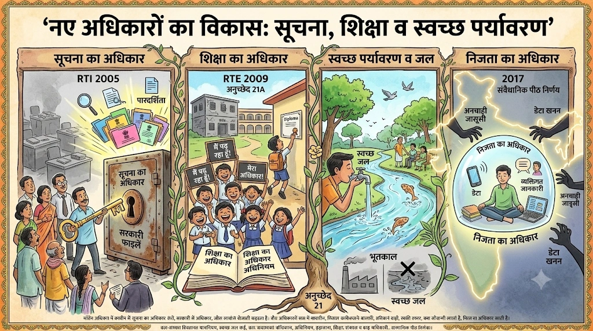
🎨 सचित्र शिक्षण कार्ड: नए अधिकारों का विकास (सूचना, शिक्षा व स्वच्छ पर्यावरण)
भारतीय संविधान एक जीवंत दस्तावेज है। न्यायिक व्याख्याओं के माध्यम से सूचना का अधिकार (RTI 2005), शिक्षा का अधिकार (RTE 2009), स्वच्छ पर्यावरण व जल, तथा निजता का अधिकार (2017) आधुनिक भारत के नए मौलिक स्तंभ बनकर उभरे हैं।
समग्र सारांश: भारतीय संविधान में मौलिक अधिकार, राज्य के नीति निर्देशक तत्व और मौलिक कर्तव्य मिलकर एक त्रिवेणी बनाते हैं जो एक न्यायपूर्ण, समतामूलक और लोकतांत्रिक समाज का निर्माण करती है।
- अधिकार और कर्तव्य का सह-अस्तित्व: एक नागरिक का अधिकार दूसरे नागरिक का कर्तव्य होता है। अधिकारों का सच्चा उपभोग केवल तभी संभव है जब सभी नागरिक अपने कर्तव्यों के प्रति सजग हों।
- संवैधानिक संतुलन: व्यक्तिगत स्वतंत्रता (भाग III) और सामाजिक कल्याण (भाग IV) के मध्य सामंजस्य ही भारतीय लोकतंत्र की सबसे बड़ी शक्ति है।
- जागरूक नागरिकता: किसी भी संविधान की सफलता उसके लिखे शब्दों में नहीं, बल्कि जागरूक नागरिकों द्वारा अधिकारों की रक्षा और कर्तव्यों के निष्ठापूर्वक पालन में निहित है।
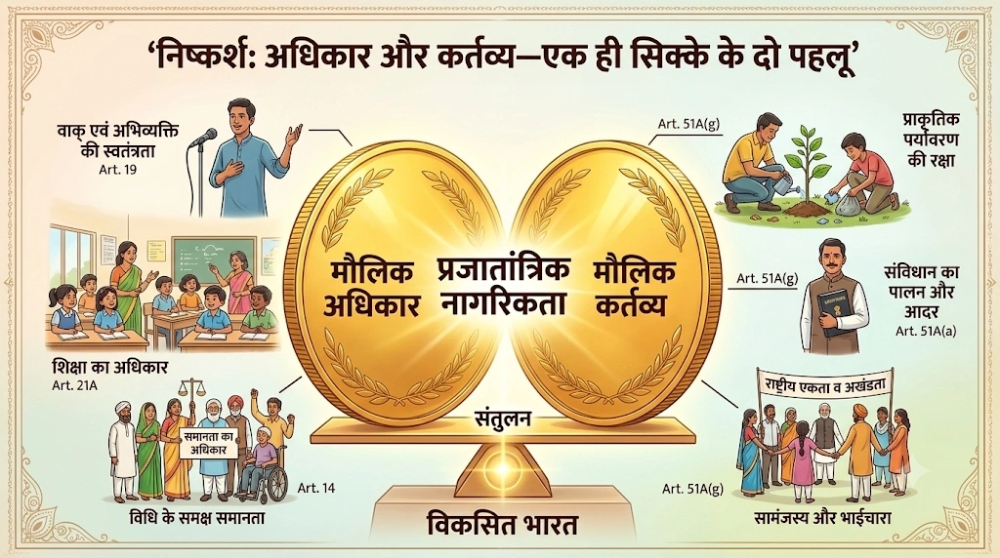
🎨 सचित्र शिक्षण कार्ड: निष्कर्ष (अधिकार और कर्तव्य—एक ही सिक्के के दो पहलू)
लोकतांत्रिक भारत में मौलिक अधिकार और मौलिक कर्तव्य एक ही सिक्के के दो पहलू हैं। जब नागरिक अपने अधिकारों के उपभोग के साथ-साथ राष्ट्र के प्रति कर्तव्यों का निष्ठापूर्वक पालन करते हैं, तभी एक विकसित और सशक्त भारत का निर्माण होता है।